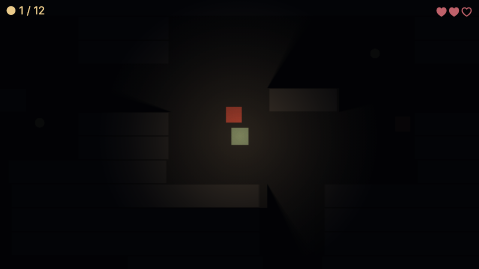
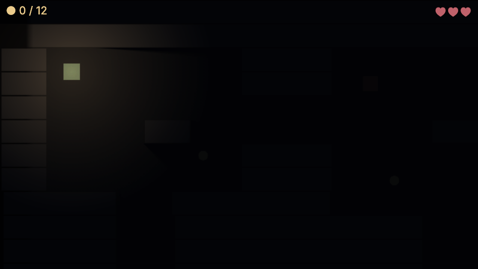

54 · Dungeon 6: Light and shipping
The last part of the Unity-style dungeon series, continuing from part 5, enemies and health. Allow 40 minutes.
What you will build: the same dungeon, but dark. The hero carries a lantern; walls block the light and cast real shadows. Then you export the game as a folder, a single HTML file and a zip.

Download: Part 6 project, also in examples/series-dungeon/part6.
1 How 2D light works#
In Unity you would use the URP 2D Renderer with Light2D and ShadowCaster2D. Nord has three small, readable library scripts (see 2D lights and shadows); copy them from Library ▸ fx or library/scripts/:
| Script | Unity equivalent | Goes on |
|---|---|---|
light2d.js |
the 2D Renderer / Global Light | one empty entity |
light2d-source.js |
Point / Spot Light 2D | anything that glows |
light2d-occluder.js |
Shadow Caster 2D | walls, crates, pillars |
Sprites on layer 1 and above, and the HUD, are drawn after the darkness and stay bright. Layer 0 is darkened. (The library scripts are written in the lower-case Nord style; they work together with your MonoBehaviours.)
2 Add the lights#
Copy the scripts. In your file manager copy
light2d.js,light2d-source.jsandlight2d-occluder.jsinto the project'sscripts/folder (or insert them from the Library tab, category fx).The darkness. Hierarchy ▸ + Create ▸ Empty, rename it
Light2D. Inspector ▸ + Add script ▸ scripts/light2d.js. Fill in its fields:Field Value Meaning ambient#0a0c12the colour of "no light" scale7.5the lightmap is 1/7.5 of the screen: blurry and fast shadowson walls block light softShadows40softness of shadow edges The lantern. In the Hierarchy drag a new empty object onto
Heroso it becomes its child, rename itLantern, Inspector ▸ + Add script ▸ scripts/light2d-source.js:Field Value color#ffb86bradius190intensity0.9falloff1.4softness5flicker0.08Save the scene.
In the file scenes/main.scene.json, the Lantern is a child of Hero:
"children": [ { "name": "Lantern", "scripts": [ { "path": "scripts/light2d-source.js",
"attributes": { "color": "#ffb86b", "radius": 190, "intensity": 0.9, "falloff": 1.4, "softness": 5, "flicker": 0.08 } } ] } ]A child moves with its parent: nothing to write. Press Play: the world is black except for a warm circle.
3 Walls that cast shadows#
Open the wall prefab (Assets ▸ prefabs ▸ right-click wall ▸ Open prefab) and Inspector ▸ + Add script ▸ scripts/light2d-occluder.js; tick static. Every wall in the level now blocks light. Nothing in level.js changes, which is the point of prefabs: one edit, every wall.
Play: stand in a room, then walk to a corridor mouth. The lantern lights the room and the wall casts a shadow: you cannot see what is behind it. Enemies in the dark are invisible until they step into the light; the see-through chase of part 5 now feels like a horror game.
Why did merging walls in part 3 matter? Every occluder adds edges that light is tested against. 74 long strips are far cheaper than 449 squares.
4 Asking the light#
The system exposes itself as game.light2d, so gameplay can ask how bright is it here:
Example (not a file: use it inside Update() of any script, for example a future scripts/Stealth.js)
const p = this.position;
const level = this.game.light2d.lightAt(p.x, p.y); // 0 = dark, about 1 = fully lit, shadows includedStealth games, vampires, plants that grow in the light all start from this number. The test of this page asserts that the hero stands in light (> 0.5) and a point 400 pixels away is dark (< 0.05).

5 Shipping#
Terminal (in the folder that contains the dungeon project folder):
nord check dungeon
nord build dungeon --minify -o dungeon-web # a folder of static files: upload it anywhere
nord build dungeon --single-file -o dungeon-one # ONE index.html: send it by e-mail, it runs from file://
nord build dungeon --zip --host itch -o dungeon-itch # also writes dungeon-itch.zip for itch.ioThe folder holds the runtime, the engine libraries and your scenes and scripts; no server and no internet are needed to play it. Browsers load ES modules only over http://, so host the folder (for a quick test python3 -m http.server inside it) or use --single-file. Our part 6 build is 2.8 MB of files, 1.3 MB zipped, most of it the Phaser library. More in Build, publish and ship.
6 Check yourself#
- A dark world with a warm circle around the hero and a soft edge.
- A wall between you and an enemy hides it.
ambient#000000makes the corners pitch black;#3a3f55makes the whole map readable.- The exported folder plays from a static web server.
What you learned#
- 2D light is three library scripts: system, source, occluder, like URP 2D Lights.
- A child GameObject follows its parent: a lantern is a child of the hero.
- An edit on a prefab changes every instance.
game.light2d.lightAt(x, y)turns light into game logic.nord buildexports a static web game: folder, single file, zip, hosting presets.
The end of the series#
You wrote a mover, a level loader, a camera, pickups, a HUD, enemies, health and lights in about 250 lines of Unity-style JavaScript. The dungeon uses squares for art. In Ember Crypt we build the real thing: pixel-art tiles, an animated hero with a sword, bats and slimes, keys and doors, particles, sound, screen shake, a title screen and a saved high score.